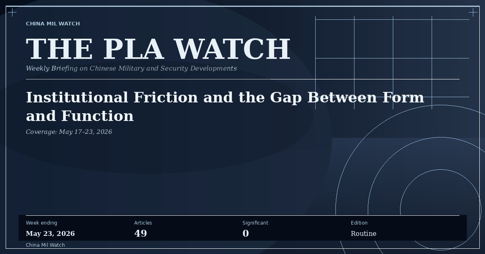

A weekly publication
ThePLA Watch
Weekly signals from Chinese military media.
The reader-facing weekly publication from China Mil Watch — a synthesis of the daily Chinese-language monitoring archive into a single editorial brief for policy readers, analysts, and journalists. Source-grounded, restrained, and aware of what official messaging does and does not reveal.
Latest Edition
Week ending 2026-05-23
Routine
The PLA Watch: Institutional Friction and the Gap Between Form and Function

A full week of PLA Daily coverage with no flagged significant articles — but the volume of internal-reform content tells its own story about what the institution is actively struggling with.
Previous editions
2
Week ending 2026-05-16
KJ-600 carrier qualification confirmed aboard Fujian. A Rocket Force unit publishes the failure that prompted its crew-hardening model. 85 articles, May 10–16, 2026.
Week ending 2026-05-09
Pilot edition based on three days of observed data (7–9 May 2026), not a full weekly readout. Across 42 articles from PLA Daily and affiliated outlets, the suspended death sentences against Wei Fenghe and Li Shangfu — two consecutive former defense ministers — stand apart from otherwise routine coverage.